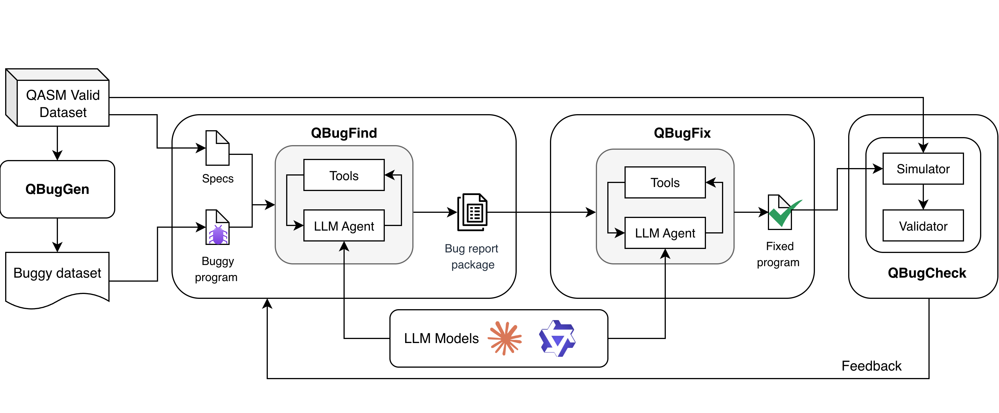

AI / Agent 晨间简报
测试运行日期：2026-06-08 · 信息截止：20:45 CST（12:45 UTC）
覆盖：新论文 · GitHub 三日增长代理榜 · OpenAI / Anthropic 官方动态
QBugLM: An Agentic Benchmarking Framework for LLM-based Quantum Software Debugging
Agentic benchmark Multi-agent architecture Quantum software debugging
arXiv 摘要页 · 论文 PDF · 论文中声明的代码链接
English overview
对应中文翻译
核心方法
QBugGen 注入有明确真值标签的量子程序缺陷；QBugFind 由 LLM 智能体定位和分类缺陷；QBugFix 由第二个智能体实施修复；QBugCheck 使用无噪声模拟器、测量分布距离与门数量进行验证。
关键结论
结构化提示在 BV 电路上达到 Qwen3 95%、Sonnet 97% Pass@1。两次重试后，大多数缺陷类别达到或接近 100%。除语义偏差外，Qwen3 的成本通常低 4 至 9 倍，速度快 1.5 至 4.6 倍。
创新点
将缺陷生成、双智能体调试和确定性验证组合成端到端 benchmark；将重试反馈、提示策略、缺陷类别、token、时间和货币成本放入同一评估框架。
局限
案例研究只覆盖 5 个五量子位电路、两种模型，并存在缺陷类别不平衡。实验基于模拟器，不能直接代表真实量子硬件上的调试效果。
论文全部图表
PDF 共识别出 1 个表格和 5 张图。以下按论文顺序完整附上。
Table I · Taxonomy of common bugs in quantum software
| 类别 | 含义 / 示例 | OpenQASM 3 示例 |
|---|---|---|
| C1：弃用语法错误 | 在 OpenQASM 3.0 中使用弃用的 2.0 语法，或引入语法错误 | include "stdgates.inc"; → include "qelib1.inc"; |
| C2：电路构建结构错误 | 违反电路构造规则，例如 CNOT 控制位和目标位使用相同索引 | cx q[0],q[1] → cx q[0],q[0] |
| C3：门过度使用 / 冗余 | 重复自逆量子门 | h q[0] → 连续执行三次 h q[0] |
| C4：语义偏差 | 替换、插入或删除门；修改旋转相位；错误重复或删除测量语句 | rx(0.5) q[0] → ry(0.5) q[0] 等 |

过去三天新建的 AI / Agent 高增长项目 Top 5
| # | 项目 | 用途 | 当前 star / 三日代理值 | 主要语言 | 新建时间 UTC | 最近更新 UTC |
|---|---|---|---|---|---|---|
| 1 | JimLiu/baoyu-design | 把 Claude Design 作为 Agent Skill 在 Cursor、Claude Code 等环境本地运行，生成 UI、原型和演示文稿。 | 453 | JavaScript | 2026-06-07 01:16 | 2026-06-08 12:31 |
| 2 | amElnagdy/guard-skills | 面向 coding agents 的质量门禁 skills，用于发现 AI 生成代码、测试和文档中的常见失效模式。 | 413 | 未标注 | 2026-06-06 16:59 | 2026-06-08 12:37 |
| 3 | GordenSun/GordenSuperPPTSkills | 使用 GPT 生成图片风格 PPT，再转换为可编辑 PPTX 的 Agent Skill。 | 247 | Python | 2026-06-07 16:20 | 2026-06-08 12:41 |
| 4 | adamallcock/codex-chatgpt-control | 让 Codex agent 控制可见 ChatGPT 网页会话的非官方 SDK。 | 123 | TypeScript | 2026-06-06 21:09 | 2026-06-08 12:22 |
| 5 | RainyMarks/DeepX | Rust 编写的 AI agent workspace。 | 32 | Rust | 2026-06-07 02:30 | 2026-06-08 10:33 |
查询来源：GitHub Search API 与各仓库 REST API；查询时间约为 2026-06-08 20:41 CST。
OpenAI / Anthropic 官方动态
OpenAI 技术博客 / 研究文章
过去 24 小时未发现新发布内容。
官方 News RSS 最新条目仍为 2026-06-04 发布的 How Endava is redesigning software delivery around AI agents。
Anthropic 博客 / 官方视频
过去 24 小时未发现新发布内容。
Anthropic Newsroom 当前较新的条目包括 2026-06-02 的 Expanding Project Glasswing；官方 YouTube RSS 最新视频发布于 2026-05-07。
OpenAI 官方 YouTube：过去 24 小时新增 8 个视频
已发现新发布内容。以下视频均发布于 2026-06-08 08:30 UTC 左右（16:30 CST）。
- OpenAI on OpenAI: Stacie Faggioli, Business Finance Officer Applications, OpenAI
介绍 OpenAI 财务团队如何利用 ChatGPT、ChatGPT for Excel、Codex 和自定义 agents 重构财务运营。 - Operationalizing AI in workflows: Lee Spacagna, Solutions Engineer, OpenAI
讲解 Workspace Agents、Codex 等企业产品如何嵌入金融服务工作流。 - Frontier Intelligence & Financial Services: Katy Elkin, GTM Lead, OpenAI
围绕工作流转型、员工生产力和 AI 原生客户产品，介绍金融服务行业应用愿景。 - Customer Ignite Talk: Maurizio Poletto (Erste Group) & OpenAI
Erste Group 客户分享；官方 RSS 未提供更详细简介。 - Customer Ignite Talk: Emily Prince (LSEG) & OpenAI
LSEG 客户分享；官方 RSS 未提供更详细简介。 - Win through AI powered products: Conor Spicer, Solutions Engineer, OpenAI
讨论金融机构如何通过 AI 驱动的客户产品和数字体验建立差异化优势。 - Multiplying workforce impact: Stephanie Anani, Solutions Engineer, OpenAI
讨论部署策略、组织转型，以及如何在受监管环境中规模化可信 AI 系统。 - Customer Ignite Talk: Ravneet Shah (Allica Bank) & OpenAI
Allica Bank 客户分享；官方 RSS 未提供更详细简介。
来源与方法
- 论文发现与元数据：arXiv API 查询、QBugLM arXiv 页面、论文 PDF。
- 论文图表：从作者上传至 arXiv 的 PDF 中识别并抽取；共 1 表、5 图。表格按原文语义转写为 HTML，图像保留原始内容。
- GitHub：GitHub Search API 查询及仓库 API。由于首次运行没有三日前基线，使用“过去三天新建仓库的当前 star 数”作为增长代理指标。
- OpenAI：官方 News RSS、官方 YouTube RSS。
- Anthropic：官方 Newsroom、官方 YouTube RSS。
- 时间窗口：首次运行按过去 24 小时检查官方动态；检索截止 2026-06-08 20:45 CST。
- 不确定性：GitHub star 数持续变化；论文实验结果为作者报告，未在本次简报中独立复现实验；论文声明的代码仓库本次访问返回 404。